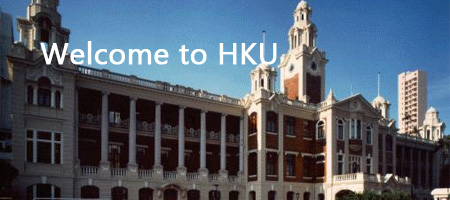
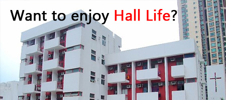

What is Registration Day?
Registration Days 2011 will be held on 2nd and 3rd in August, in order to let the freshmen register for The University of Hong Kong, and faculty under the assigned curriculum. It is also an opportunity to get familiarize with the different associations/society in HKU, including Hall Students’ Association.
Procedure in Registration Day |
Phase 0
Loke Yew Hall |
Register for The University of Hong Kong, get the account information to log in Portal (HKU Online Platform) and acquire the Freshmen package |
Phase I
Faculty Office |
Register for the assigned faculty and its society, freshmen can apply for the Orientation Camp organized by faculty society and department society |
Phase II
Union Building |
Different society under Sports Association, Cultural Association and Independent Clubs Association will set up booths to let the freshmen know more about themselves, freshmen can register on own interest |
Phase III
Run Run Shaw Podium |
Different Hall Students’ Association will set up booths, most of the hall will organize hall tour and camps for the freshmen to know more about themselves, freshmen can also register on own interest |
Registration Day Item Checklist
1. JUPAS Application for Admission
2. ID card, Copies of ID card, ID Photos
3. Cash（About $1000 - $1500)
4. Backpacks and files
5. Stationary |

What is U-admin and Non U-admin?
For the U-admin Hall, the university will assign 70% of the vacancies according to the distance from home, and also the time used for travelling to HKU, however, for non U-admin, most of the vacancies are chosen by the Students’ Association.
Why hall tour or camp?
They are the fastest and direct way to know the hall’s culture and facilities, hall tour may take about 20~30 minutes
|